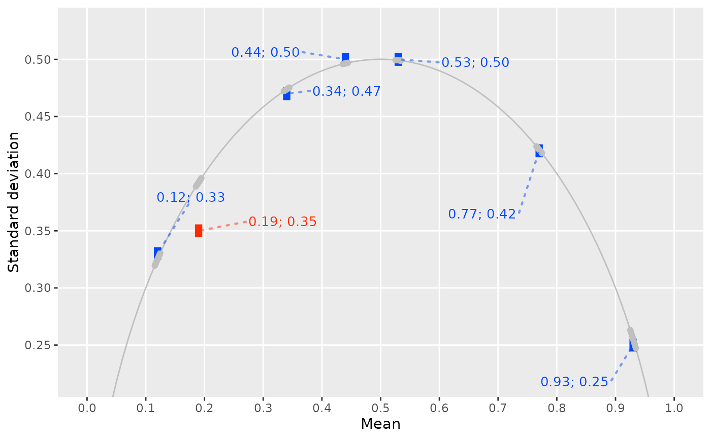
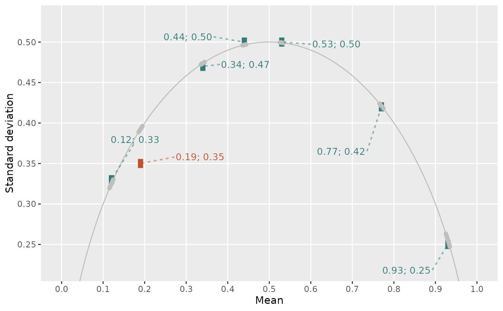

debit_plot() plots the output of debit_map(). Each value
set is a rectangle spanning the rounding bounds of its mean and SD, in
blue if consistent and red if not, against the DEBIT line: the SD of
binary data as a function of their mean, for the given sample size.
Arguments
- data
Data frame returned by
debit_map().- show_labels
Logical. Should the value sets be labeled with "mean; SD"? Default is
TRUE.- show_full_scale
Logical. If
TRUE, the x-axis spans the whole DEBIT line, from 0 to 1, regardless of the data. Default isTRUE.- show_theme_other
Logical. If
TRUE, minor grid lines are removed and y-axis ticks are added. Default isTRUE.
Details
The line is that of the statistic debit_map() was called with:
the sample SD by default, the population SD under sd_meaning = "sd_pop", both under "sd_sample_or_pop", or the SE under "se".
Under formula = "exact", the default of debit_map(), the means
k / n that would be reported as each value set's x are marked as
points on the line, and a value set is consistent if one of them lies
inside its rectangle. If n is large, only the points that would not be
drawn over by others are drawn, with a message.
If n varies in data, the lines for the smallest and largest n are
drawn and the band between them is shaded; it contains the lines for all
other n.
A rectangle can be too small to see, so each is drawn over a point at the
reported mean and SD. Value sets with NA in a column needed for drawing
are left out with a warning, and so are those of continuous data, to which
DEBIT doesn't apply.
The labels come from ggrepel::geom_text_repel(), which places them at
random to minimize overlap. A fixed seed makes the placement the same on
every run; resizing the plot may give a better one.
Colors come from one scale for colour and fill, mapped to
consistency. Add another to change them, as in the examples.
References
Heathers, James A. J., and Brown, Nicholas J. L. 2019. DEBIT: A Simple Consistency Test For Binary Data. https://osf.io/5vb3u/.
Examples
pigs3 |>
debit_map(digits_x = 2, digits_sd = 2, data_type = "integer") |>
debit_plot()

# Other colors:
pigs3 |>
debit_map(digits_x = 2, digits_sd = 2, data_type = "integer") |>
debit_plot() +
ggplot2::scale_colour_manual(
values = c("TRUE" = "#2f7d74", "FALSE" = "#c1522e"),
aesthetics = c("colour", "fill"),
guide = "none"
)
#> Scale for colour is already present.
#> Adding another scale for colour, which will replace the existing scale.
